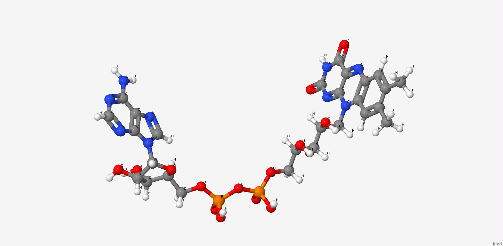
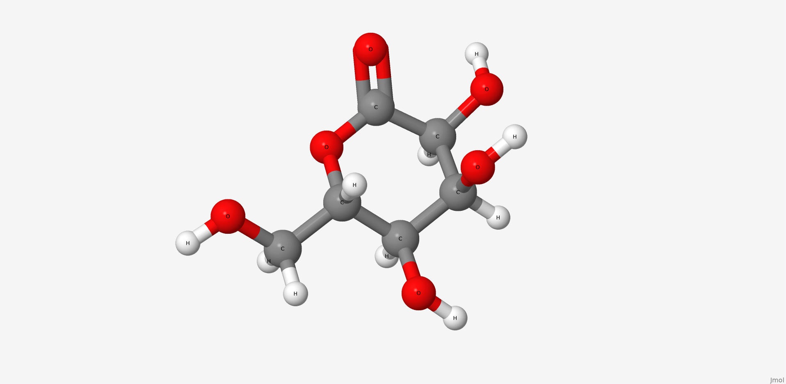

A. flavus FAD dehydrogenase description
FAD-dependent glucose dehydrogenase (UNIPROT, RCSB) functionally can be refered to as the oxidoreductase, it catalyzes the oxidation of first hydroxyl group of glucose. Oxidoreductase are capable of utilizing a number of chemical compounds as the primary electron acceptor, FADGDH employs flavin adenine dinucleotide for this. The examined FADGDH is an extracellular protein. Currently it is being considered as a potential component of glucose-specific sensor. FADGDH comprises a number of advantages against other enzymes. It is more specific to the substrate than pyrroloquinoline quinone glucose dehydrogenase and it doesn’t react with oxygen as glucose oxidase does.
Ligand binding site.
Two long loops between H2 and H3, another between B16 и H14 cross and form a narrow channel. FAD
finds its place in the protein’s pocket, where it interacts with elements of secondary structure in
such fashion that it’s covered by them as by two lids. Isoalloxazine ring of the ligand changes
conformation in reduced state: the planar strucure slightly bends. FAD containing region has a
glycosylation site Asn69 (it may be used for controlling the protein activity).
The protein binds two glucose molecules: on exterior and interior surfaces. In catalytic centre the substrate interacts with Tyr53, Arg501, Asn503, His505, His548. Both Leu401 and Trp415 form hydrophobic environment. It is intriguing that these residues are well conserved among other related proteins (AnGOx, PaGOx). The distinct feature of this enzyme is the Glu413 residue, which forms a linkage with a sugar, thus enhancing the precision of ferment-substrate binding.
FAD dehydrogenase ligands description
1. Flavin adenine dinucleotide
Flavin adenine dinucleotide is a condensation product of riboflavine and ADP. Coenzyme of a number of dehydrogenases, including the studied enzyme.
| Physico-chemical properties of FAD | |
| IUPAC nomenclature | [[(2R,3S,4R,5R)-5-(6-aminopurin-9-yl)-3,4-dihydroxyoxolan-2-yl]methoxy-hydroxyphosphoryl] [(2R,3S,4S)-5-(7,8-dimethyl-2,4-dioxobenzo[g]pteridin-10-yl)-2,3,4-trihydroxypentyl] hydrogen phosphate |
| Chemical formula (SMILES) | CC1=CC2=C(C=C1C)N(C3=NC(=O)NC(=O)C3=N2)CC(C(C(COP(=O)(O)OP(=O)(O)OCC4C(C(C(O4)N5C=NC6=C5N=CN=C6N)O)O)O)O)O |
| Brutto-formula | C27H33N9O15P2 |
| Molar mass | 785.557 М |
| PubChem CID | 643975 |
2. Gluconolactone
Gluconolactone is a lactone or oxidized derivative of glucose. Gluconolactone is a polyhydroxy acid (PHA) that is capable of chelating metals and may also function by scavenging free radicals. It is frequently used in structural analysis as a substitute for glucose. Its valuable properties are constituted of that it introduces less entropy into system than glucose thus it forms more stable structure. Its occurrence in the structure of the studied protein is due to the same reason.

| Physico-chemical properties of gluconolactone | |
| IUPAC nomenclature | (3R,4S,5S,6R)-3,4,5-trihydroxy-6-(hydroxymethyl)oxan-2-one |
| Chemical formula (SMILES) | C(C1C(C(C(C(=O)O1)O)O)O)O |
| Brutto-formula | C6H10O6 |
| Molar mass | 178.14 М |
| PubChem CID | 7027 |
FAD-dehydrogenase bonds' visualisation in JSMol
Show hydrogen bonds:
| FAD-dehydrogenase antibody bonds' | ||||
| # | Residues' names | Bond type | Bond length (Å) | Bond angle (°) |
| 1 | H:CYS'140 - H:CYS'206 | Disulfide bridge | 2,0 (S-S) | 089,3 (C-S-S-C) |
| 2 | H:GLY'104 - L:SER'043 | Hydrogen bond | 2,7 (O-O) | 144.1 (C=O-O) |
| 3 | L:ILE'117 - H:GLY'129 | Hydrogen bond | 3,0 (O-O) | 140,4 (C=O-N) |
| 4 | L:TYR'032 - L:ASN'028 | Hydrogen bond | 2,9 (O-N) | 136,8 (C=O-N) |
| 5 | H:GLU'100B- L:LYS'030 | Salt bridge | 2,5 (O-N) | 161.8 (C=O-N) |
| 6 | L:ASP'082 - L:ARG'061 | Salt bridge | * | 125.58 ([ASP]82:L.CG - [ASP]82:L.OD2 - [ARG]61:L.NH1) |
Esterae-like D2.3 antibody description A. flavus
1YEK is an esterae-like D2.3 antibody of mice (Mus musculus), raised against the p-nitroben- zyl phosphonate nB-P conjugated to a protein carrier. It is able to perform hydrolytic activity towards the corresponding ester nB-E.
Dependent on its substrate, the enzyme is inhibited by its product forming a negative loop. The inhibition is characteristic of nitrobenzol. Nitrophenol in comparence has an additional OH group, which reduces its hydrophobic interactions with the catalytic centre, and its size does not enable formation of hydrogen bond between Asn L34 and -NO2. As a result nitrophenol is more easily released from the binding domain and does not act as an inhibitor.
We analyzed the structure of this antibody in complex with 4-nitrophenol.
Esterae-like D2.3 antibody bonds' visualisation in JSMol
Show bonds:
The description of the Esterae-like D2.3 antibody A. flavus hydrophobic nucleus
In a hydrophobic nucleus surrounding atoms at a distance of 3 angstroms from selected residue form an environment, and at a distance of 5 angstroms completely cover its surface. The average distance between adjacent non-bonded atoms in the nucleus varies from 3 to 4 angstroms, which, given the radii of atoms (1.4-1.85 Å), does not allow the water molecule to be inside it, like almost any other.
| Esterase-like antibody bonds' | ||||
| # | Residues' names | Bond type | Bond length (Å) | Bond angle(°) |
| 1 | H:CYS'140 - H:CYS'206 | Disulfide bridge | 2,0 (S-S) | 089,3 (C-S-S-C) |
| 2 | H:GLY'104 - L:SER'043 | Hydrogen bond | 2,7 (O-O) | 144.1 (C=O-O) |
| 3 | L:ILE'117 - H:GLY'129 | Hydrogen bond | 3,0 (O-O) | 140,4 (C=O-N) |
| 4 | L:TYR'032 - L:ASN'028 | Hydrogen bond | 2,9 (O-N) | 136,8 (C=O-N) |
| 5 | H:GLU'100B- L:LYS'030 | Salt bridge | 2,5 (O-N) | 161.8 (C=O-N) |
| 6 | L:ASP'082 - L:ARG'061 | Salt bridge | * | * |